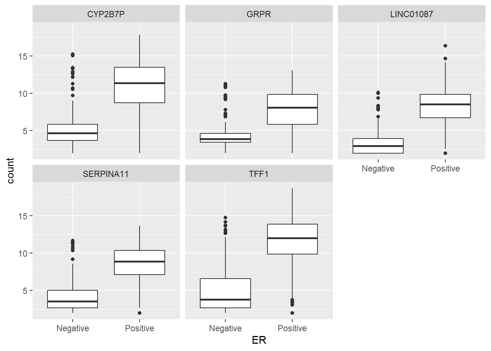
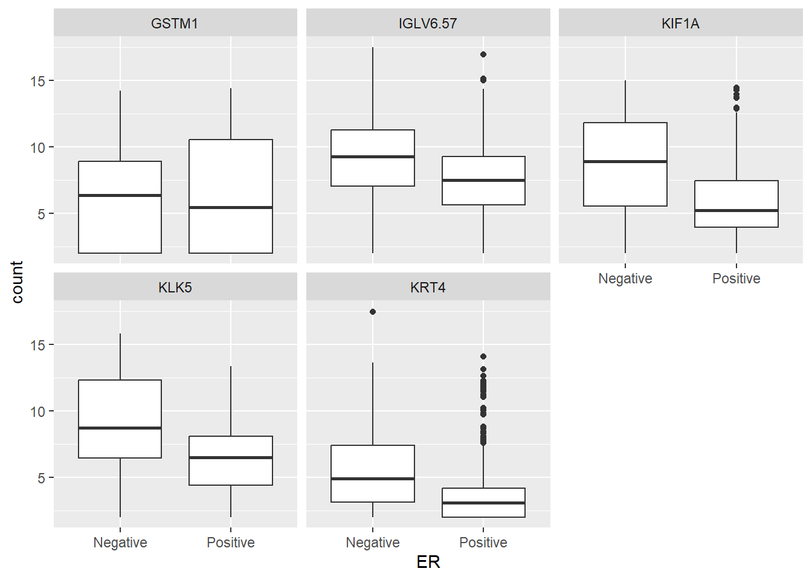
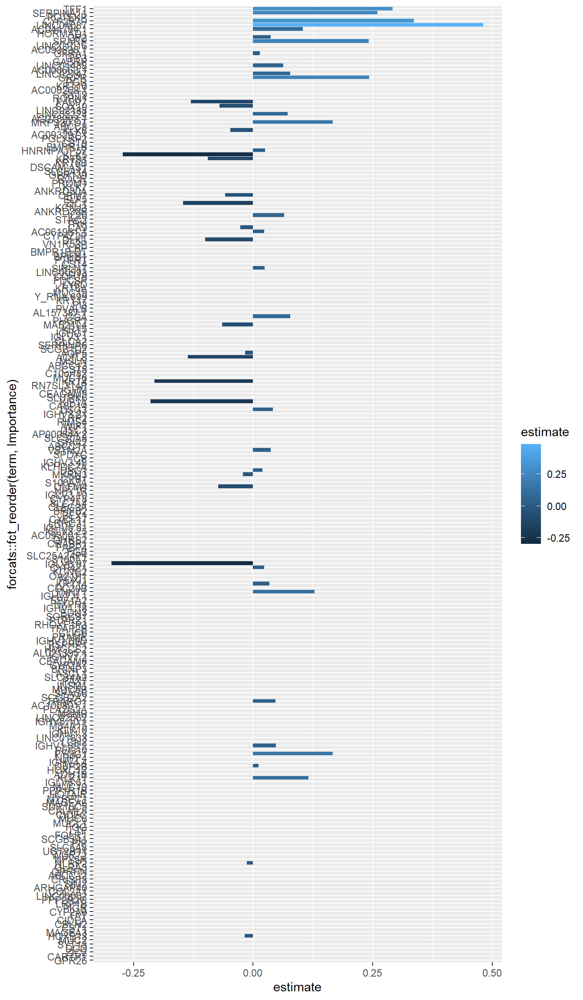

if(!require(tidymodels)) install.packages("tidymodels")
## install BiocManager to install Bioconductor packages
if(!require(BiocManager)) install.packages("BiocManager")
if(!require(tidybulk)) BiocManager::install("tidybulk")
if(!require(SummarizedExperiment)) BiocManager::install("SummarizedExperiment")
if(!require(dplyr)) install.packages("dplyr")
if(!require(ggplot2)) install.packages("ggplot2")Tidymodels for omics data: Part 3a
Machine Learning with glmnet and random forests in R using many features (genes)
Pre-amble
In the previous section we described how to download TCGA data for breast cancers and manipulated them using a combination of tidybulk and dplyr to retain a set of expressed, variable genes plus a set of known cancer genes.
There is a very extensive set of clinical information recorded for each sample / patient, but to keep things simple we will start with a task for being able to predict Estrogen Receptor status from the expression data, which can be used as an indicator of whether a patient will respond to certain treatments. This is clearly not going to get us a Nature paper or a Nobel prize, but it should work well and introduce some of the key concepts of machine learning. There are a set of packages that we will need:-
You also need the processed data from the first section and the code to download this is:-
### get the saved RDS
dir.create("raw_data", showWarnings = FALSE)
if(!file.exists("raw_data/brca_train_tidy.rds")) download.file("https://github.com/markdunning/markdunning.github.com/raw/refs/heads/master/posts/2025_11_06_tidymodels_TCGA_part1/brca_train_tidy.rds", destfile = "raw_data/brca_train_tidy.rds")
if(!file.exists("raw_data/brca_test_tidy.rds")) download.file("https://github.com/markdunning/markdunning.github.com/raw/refs/heads/master/posts/2025_11_06_tidymodels_TCGA_part1/brca_test_tidy.rds", destfile = "raw_data/brca_test_tidy.rds")Load the pre-prepared tidy data
brca_train_tidy <- readRDS("raw_data/brca_train_tidy.rds")
brca_test_tidy <- readRDS("raw_data/brca_test_tidy.rds")The previous section was hopefully a gentle introduction to Machine Learning, and we didn’t set the bar too high for what for our task. The simple models we built using ESR1 to classify breast cancer patients into Estrogen Receptor Positive or Negative were extremely effective (as measured by accuracy, sensitivity and specificity). In reality, faced with this problem there wouldn’t be much be much justification in exploring other models when simple models, that are easily explainable perform very well.
Rather than congratulating ourselves lets see how we can cope without ESR1 in our dataset, or any genes that correlate highly with it.
brca_train_tidy %>%
select(CLEC3A:BRINP2) %>%
cor() %>%
data.frame() %>%
tibble::rownames_to_column("Cor_with_Gene") %>%
select(ESR1, Cor_with_Gene) %>%
slice_max(ESR1, n = 10) ESR1 Cor_with_Gene
1 1.0000000 ESR1
2 0.8961402 AL078582.2
3 0.8397965 AGR3
4 0.7097549 AGR2
5 0.6985503 GFRA1
6 0.6948485 SERPINA11
7 0.6874275 CYP2B7P
8 0.6854794 AC093838.1
9 0.6759798 LINC01087
10 0.6756978 TFF1Let’s proceed by picking genes with an absolute correlation < 0.7 with ESR1 as our possible predictors.
kept_genes <- brca_train_tidy %>%
select(CLEC3A:BRINP2) %>%
cor() %>%
data.frame() %>%
tibble::rownames_to_column("Cor_with_Gene") %>%
select(ESR1, Cor_with_Gene) %>% #
filter(abs(ESR1) <0.7) %>%
pull(Cor_with_Gene)Now we restrict our data to just these genes, and the Estrogen Receptor status (renamed to ER for convenience).
er_train <- brca_train_tidy %>%
select(all_of(kept_genes), ER = er_status_by_ihc) %>%
mutate(ER = as.factor(ER))
er_test <- brca_test_tidy %>%
select(all_of(kept_genes), ER = er_status_by_ihc) %>%
mutate(ER = as.factor(ER))Introducing glmnet
With the number of features (genes) we have in our dataset, even after filtering, there is still the potential for us to suffer from the “curse of dimensionality” and overfit our data. In other words, we could build a model so specific that it is of little use beyond the dataset that it was trained upon.
Methods that provide regularization are very appealing for this reason because they constrain the model, helping it find the optimal combination of features. One such method that implements these concepts in tidymodels is called “glmnet”.
The amount to which the contribution of less-informative features is “shrunk” is controlled by two arguments: penalty (known as \(\mathbf{\lambda}\) in the literature) and mixture (known as \(\mathbf{\alpha}\)). \(\mathbf{\lambda}\) is a single, non-negative numerical value that controls the strength of the regularization (shrinkage) applied to the model. If \(\mathbf{\lambda = 0}\), no penalty is applied, and the model reverts to standard, unregularized Logistic Regression. If \(\mathbf{\lambda > 0}\), coefficients are shrunk towards zero to prevent overfitting.\(\mathbf{\alpha}\) controls how the features are shrunk and defines the characteristics of the resulting model, ranging between 0 and 1.
Lasso (\(\mathbf{\alpha = 1}\)) forces the coefficients of less important genes exactly to zero, resulting in a sparse model (automatic feature selection). Ridge (\(\mathbf{\alpha = 0}\)) shrinks all coefficients towards zero but never removes any gene completely. Any value between \(\mathbf{0 < \alpha < 1}\) is known as the Elastic Net penalty. This blend ensures the model benefits from Lasso’s feature selection while retaining the stability that Ridge provides when dealing with highly correlated features (a common characteristic in RNA-seq data).
Values such as these, that can take a range of values and affect the fitting of the model, are known as Hyperparameters. This is a distinct concept from a parameter, which is a quantity that is estimated during the model fit, such as the coefficients (\(\beta\) values) of a regression model.
We will pick some values of penalty and mixture to see how the model works. In practice, we would want to use a range of values and tune our model to find the best combination, which will be a topic for another time though.
As with other models we have used, the first stage is to create a model specification.
library(tidymodels)
lasso_spec_fixed <- logistic_reg(
penalty = 0.01, # Fixed penalty (lambda)
mixture = 1 # set alpha = 1 for lasso
) %>%
set_engine("glmnet") %>%
set_mode("classification")As before we are using data that have already been processed using domain-specific tools, so there is no need for much in our “recipe” (sometimes you will see removing small variances and filtering here). However, we need to change the formula from using a single gene to predict to using all available features. The syntax for this is ER ~., which avoids having to type all the feature names.
However, we need to introduce a step that will normalize (or standardise) our features (genes) by subtracting the mean and dividing by the standard deviation. In other words to create a “z-score” that will make all the features comparable and stop any one feature from dominating the model or obscuring the contribution from other features. Features with a higher mean or variance could also be unfairly shrunken by lasso.
er_recipe_multigene <- recipe(ER ~ ., data = er_train) %>%
step_normalize(all_predictors())We now combine the recipe and specification into a workflow and fitting the model to the train data should hopefully follow a familiar pattern:-
# Define the workflow using the fixed specification and your multi-gene recipe
lasso_workflow_fixed <- workflow() %>%
add_model(lasso_spec_fixed) %>%
add_recipe(er_recipe_multigene)
# Fit the model directly to your training data
fixed_lasso_fit <- lasso_workflow_fixed %>%
fit(data = er_train)Printing the model gives us some insight into the modeling process. After printing the recipe and model specification, we see how the model is learning from the data.
Lambda (\(\lambda\)) “Penalty Strength”. This is the \(\lambda\) value applied at that specific step. It decreases as you move down the table.
Df (Degrees of Freedom) This is the count of genes whose coefficients are non-zero at that \(\lambda\) value.
%Dev (% Deviance Explained) - Model Fit on Training Data. This is the percentage of deviance (a measure of error, similar to \(R^2\)) that is explained by the model. A higher value is better.
fixed_lasso_fit══ Workflow [trained] ══════════════════════════════════════════════════════════
Preprocessor: Recipe
Model: logistic_reg()
── Preprocessor ────────────────────────────────────────────────────────────────
1 Recipe Step
• step_normalize()
── Model ───────────────────────────────────────────────────────────────────────
Call: glmnet::glmnet(x = maybe_matrix(x), y = y, family = "binomial", alpha = ~1)
Df %Dev Lambda
1 0 0.00 0.274900
2 1 6.70 0.250500
3 3 13.88 0.228300
4 5 20.31 0.208000
5 6 25.83 0.189500
6 6 30.60 0.172700
7 6 34.67 0.157300
8 8 38.26 0.143400
9 8 41.51 0.130600
10 8 44.33 0.119000
11 8 46.78 0.108400
12 9 48.95 0.098810
13 9 50.94 0.090030
14 9 52.69 0.082030
15 9 54.24 0.074740
16 12 55.71 0.068100
17 15 57.09 0.062050
18 15 58.34 0.056540
19 15 59.45 0.051520
20 16 60.50 0.046940
21 16 61.44 0.042770
22 19 62.32 0.038970
23 21 63.17 0.035510
24 21 63.96 0.032350
25 22 64.67 0.029480
26 25 65.31 0.026860
27 25 65.94 0.024480
28 26 66.52 0.022300
29 26 67.06 0.020320
30 26 67.57 0.018510
31 27 68.17 0.016870
32 30 68.76 0.015370
33 36 69.37 0.014010
34 36 70.00 0.012760
35 44 70.64 0.011630
36 47 71.47 0.010590
37 51 72.36 0.009654
38 57 73.25 0.008796
39 63 74.13 0.008015
40 63 75.03 0.007303
41 64 75.83 0.006654
42 67 76.63 0.006063
43 71 77.55 0.005524
44 73 78.48 0.005033
45 78 79.45 0.004586
46 86 80.46 0.004179
...
and 54 more lines.Even though we have told the model what value of \(\lambda\) we want to use it is trying out different values of \(\lambda\) and assessing the model fit at each point. In practical terms, this would allow us to tune the behaviour of the model but that is beyond the scope of this particular section. By printing the coefficients of the model we can see what genes it has shruken to zero and effectively discarded from the model
# View the coefficients to see the shrinkage/zeroing effect
tidy(fixed_lasso_fit) %>% arrange(estimate)# A tibble: 246 × 3
term estimate penalty
<chr> <dbl> <dbl>
1 IGLV6.57 -0.295 0.01
2 KLK5 -0.272 0.01
3 KIF1A -0.215 0.01
4 KRT4 -0.206 0.01
5 GSTM1 -0.199 0.01
6 ZIC1 -0.146 0.01
7 ACTL8 -0.136 0.01
8 FABP7 -0.130 0.01
9 DLK1 -0.0998 0.01
10 KRT81 -0.0949 0.01
# ℹ 236 more rowsOr as a plot. The magnitude and sign of the coefficient (estimate) tell us something about the influence of that gene on the model, which larger (in absolute terms) estimates being more predictive.
tidy(fixed_lasso_fit) %>%
filter(term != "(Intercept)", estimate != 0) %>%
ggplot(aes(y = forcats::fct_reorder(term, estimate),x = estimate, fill = estimate > 0)) + geom_col() + xlab("Model Coefficient") + ylab("Gene")
Just to make sure that we understand we can plot the most positive coefficients against ER and see these genes are all higher expressed in ER Positive tumours.
max_coefs <- tidy(fixed_lasso_fit) %>%
filter(term != "(Intercept)") %>%
slice_max(estimate, n = 5) %>%
pull(term)
er_train %>%
select(ER, all_of(max_coefs)) %>%
pivot_longer(-ER,names_to = "Gene", values_to = "count") %>%
ggplot(aes(x = ER, y = count)) + geom_boxplot() + facet_wrap(~Gene)
Conversely, genes where a negative coefficient was predicted are all higher in ER Negative (or equivalently lower in ER Positive)
min_coefs <- tidy(fixed_lasso_fit) %>%
filter(term != "(Intercept)") %>%
slice_min(estimate, n = 5) %>%
pull(term)
er_train %>%
select(ER, all_of(min_coefs)) %>%
pivot_longer(-ER,names_to = "Gene", values_to = "count") %>%
ggplot(aes(x = ER, y = count)) + geom_boxplot() + facet_wrap(~Gene)
And the next step is of course to see how the model performs on un-seen or new data, and we created the er_test dataset for this purpose. The tidymodels eco-system uses yardstick to efficiently compile metrics and we will use accuracy, specificity and sensitivity as defined in the previous section.
class_metrics <- metric_set(accuracy, specificity, sensitivity)
fixed_lasso_fit |>
predict(new_data = er_test) |>
bind_cols(er_test) |>
class_metrics(truth = ER, estimate = .pred_class)# A tibble: 3 × 3
.metric .estimator .estimate
<chr> <chr> <dbl>
1 accuracy binary 0.920
2 specificity binary 0.939
3 sensitivity binary 0.857Overall the model is doing quite well even though we didn’t use ESR1. The specificity is quite high, meaning that it doesn’t pick too many false positives. On the other hand, the lower sensitivity means that some samples that are truly Positive are being missed.
Clinical context
In a clinical context, the high specificity is encouraging as you wouldn’t progress too many patients to potentially aggressive treatment they wouldn’t benefit from. On the other hand, some patients may miss the opportunity to take a potentially life-changing or life-extending treatment.
There is clearly an opportunity for some improvement, and possible that could be achieved by better choice of hyper-parameters. For now though lets see how other methods perform starting with the decision tree.
Decision Trees revisited
Thanks for the tidymodels philosophy, we can actually reuse quite a lot of the code from before. We first need a specification.
decision_tree_spec <- decision_tree() %>%
set_engine("rpart") %>%
set_mode("classification")The workflow then combines the specifiction with the same recipe from above.
decision_tree_workflow_fixed <- workflow() %>%
add_model(decision_tree_spec) %>%
add_recipe(er_recipe_multigene)
# Fit the model directly to your training data
decision_tree_fit <- decision_tree_workflow_fixed %>%
fit(data = er_train)
decision_tree_fit══ Workflow [trained] ══════════════════════════════════════════════════════════
Preprocessor: Recipe
Model: decision_tree()
── Preprocessor ────────────────────────────────────────────────────────────────
1 Recipe Step
• step_normalize()
── Model ───────────────────────────────────────────────────────────────────────
n= 847
node), split, n, loss, yval, (yprob)
* denotes terminal node
1) root 847 193 Positive (0.22786305 0.77213695)
2) TFF1< -0.8626308 192 47 Negative (0.75520833 0.24479167)
4) GRPR< -0.6827699 152 15 Negative (0.90131579 0.09868421) *
5) GRPR>=-0.6827699 40 8 Positive (0.20000000 0.80000000)
10) KIF1A>=0.300862 11 3 Negative (0.72727273 0.27272727) *
11) KIF1A< 0.300862 29 0 Positive (0.00000000 1.00000000) *
3) TFF1>=-0.8626308 655 48 Positive (0.07328244 0.92671756)
6) CYP2B7P< -1.140518 49 22 Positive (0.44897959 0.55102041)
12) LINC01087< -0.1876734 26 6 Negative (0.76923077 0.23076923)
24) KCNJ3< -0.4372225 18 1 Negative (0.94444444 0.05555556) *
25) KCNJ3>=-0.4372225 8 3 Positive (0.37500000 0.62500000) *
13) LINC01087>=-0.1876734 23 2 Positive (0.08695652 0.91304348) *
7) CYP2B7P>=-1.140518 606 26 Positive (0.04290429 0.95709571)
14) DLK1>=2.034831 22 9 Positive (0.40909091 0.59090909)
28) HOTAIR>=0.1519768 9 1 Negative (0.88888889 0.11111111) *
29) HOTAIR< 0.1519768 13 1 Positive (0.07692308 0.92307692) *
15) DLK1< 2.034831 584 17 Positive (0.02910959 0.97089041)
30) STAC2>=1.77434 8 3 Negative (0.62500000 0.37500000) *
31) STAC2< 1.77434 576 12 Positive (0.02083333 0.97916667) *The fit looks quite complex, but let’s plot it out.
library(rpart.plot)
rpart.plot(extract_fit_engine(decision_tree_fit))
Now that the decision tree doesn’t have ESR1 to rely on,the model found the next strongest predictor available: TFF1, splitting at a scaled value of \(-0.86\). Although TFF1 is strongly correlated with ER status, it is not powerful enough to separate the classes cleanly on its own.
Furthermore, unlike the initial ESR1-based tree (seen in the previous section), this tree is very deep and involves splits on numerous secondary genes (GRPR, KIF1A, YP2B7P, HOTAIR, etc.). The model is relying on the cumulative effect of many weak, complex, and potentially non-linear interactions among many genes to achieve classification. There is a danger that we might be over-fitting.
Nevertheless, we can see how the model performs:-
decision_tree_fit |>
predict(new_data = er_test) |>
bind_cols(er_test) |>
class_metrics(truth = ER, estimate = .pred_class)# A tibble: 3 × 3
.metric .estimator .estimate
<chr> <chr> <dbl>
1 accuracy binary 0.901
2 specificity binary 0.927
3 sensitivity binary 0.816The specificity is roughly the same as our Lasso from above, but the sensitivity is worse still. It seems like it is about time to introduce a method that is an evolution from the Decision Tree - that of a Random Forest.
Introducing the Random Forest
The random forest is a natural extension of a decision tree, as it harnesses the power of many different decision tree and uses the predictions from each individual tree to form a consensus or majority vote for each sample to be classified.
The method constructs many decision trees (as above), each using a “bootstrap sample” (a random sample with replacement) of the data. Therefore, each tree is a bit different and makes its own predictions without relying on others. Moreover, when tree is built it doesn’t look at all the features (genes in our case) at once. It picks a few at random to decide how to split the data. Whilst some trees might not work very well individually, the crowd-voting step of taking predictions from a large number of trees should lead to accurate predictions overall and negate concerns over individual trees overfitting data.
It’s specification is similar to models we have used before. We can set ranger as the method used to build the model, and this package is included as part of tidymodels. Setting importance = "permutation" is useful for biological interpretation as it will allow us to see which features (genes) are contributing most to the model
random_forest_spec <- rand_forest(
mode = "classification",
trees = 1000 # Using 1000 trees for robustness
) %>%
set_engine("ranger", importance = "permutation")Due to the random nature of the method, we need to set a seed to ensure reproducibility before we conduct the fit
set.seed(42)
random_forest_workflow <- workflow() %>%
add_model(random_forest_spec) %>%
add_recipe(er_recipe_multigene)
random_forest_fit <- random_forest_workflow %>%
fit(data = er_train)
random_forest_fit══ Workflow [trained] ══════════════════════════════════════════════════════════
Preprocessor: Recipe
Model: rand_forest()
── Preprocessor ────────────────────────────────────────────────────────────────
1 Recipe Step
• step_normalize()
── Model ───────────────────────────────────────────────────────────────────────
Ranger result
Call:
ranger::ranger(x = maybe_data_frame(x), y = y, num.trees = ~1000, importance = ~"permutation", num.threads = 1, verbose = FALSE, seed = sample.int(10^5, 1), probability = TRUE)
Type: Probability estimation
Number of trees: 1000
Sample size: 847
Number of independent variables: 245
Mtry: 15
Target node size: 10
Variable importance mode: permutation
Splitrule: gini
OOB prediction error (Brier s.): 0.05419088 Whilst the decision tree was quite intuitive to visualise, the random forest is unfortunately less so. But let’s make some predictions and see how it performs:-
random_forest_fit %>%
predict(new_data = er_test) |>
bind_cols(er_test) |>
class_metrics(truth = ER, estimate = .pred_class)# A tibble: 3 × 3
.metric .estimator .estimate
<chr> <chr> <dbl>
1 accuracy binary 0.925
2 specificity binary 0.933
3 sensitivity binary 0.898So the sensitivity has improved from the decision tree, and also beats the glmnet model, with no difference in specificity. As with the Lasso output, we can get a sense of what features are most powerful using an “importance” score that is calculated (setting importance = "permutation" in the specification allows us to do this). The ranking of these scores is important, and reflects how much more or how much less this gene contributes compared to all others in your model. A positive score means a model benefits from having that gene includes, whereas a negative score means the gene actually makes a model perform worse.
Extracting this information can be done as follows
importance_df <- pull_workflow_fit(random_forest_fit)$fit$variable.importance %>%
enframe(name = "term", value = "Importance") %>%
arrange(desc(Importance))
importance_df# A tibble: 245 × 2
term Importance
<chr> <dbl>
1 TFF1 0.00825
2 SERPINA11 0.00821
3 POTEKP 0.00801
4 CYP2B7P 0.00683
5 LINC01087 0.00666
6 AC044784.1 0.00600
7 HORMAD1 0.00521
8 GP2 0.00518
9 SRARP 0.00508
10 LINC01016 0.00505
# ℹ 235 more rowsThe genes with negative “importance” are in fact only very slightly so, and there only a handful/
importance_df %>%
filter(Importance < 0)# A tibble: 9 × 2
term Importance
<chr> <dbl>
1 TCN1 -0.00000626
2 LINC01291 -0.00000743
3 BRINP2 -0.0000202
4 SCGB2A1 -0.0000214
5 ARHGAP36 -0.0000214
6 LEP -0.0000225
7 RPSAP53 -0.0000341
8 ADIPOQ -0.0000399
9 GSTM1 -0.0000572 We can combine these results with the Lasso output from above to compare how the two methods are considering genes as important. Reassuring, those with negative importance in the random forest, with the exception of GSTM1 all had a coefficient of 0 (i.e. were removed by Lasso).
tidy(fixed_lasso_fit) %>%
filter(term != "(Intercept)") %>%
select(-penalty) %>%
left_join(importance_df) %>%
filter(Importance < 0 )# A tibble: 9 × 3
term estimate Importance
<chr> <dbl> <dbl>
1 GSTM1 -0.199 -0.0000572
2 ADIPOQ 0 -0.0000399
3 LINC01291 0 -0.00000743
4 TCN1 0 -0.00000626
5 SCGB2A1 0 -0.0000214
6 RPSAP53 0 -0.0000341
7 ARHGAP36 0 -0.0000214
8 LEP 0 -0.0000225
9 BRINP2 0 -0.0000202 We can plot both together on the bar plot below. This seems to show there are some genes with high importance from the random forest and higher coefficient in Lasso. Although surprisingly we also get some important genes according to random forest that were removed by Lasso.
I don’t think I’m going to get too concerned about this just yet as these are not our final Lasso and random forest models.
## N.B. Haven't quite figured out the best visualisation for this yet
tidy(fixed_lasso_fit) %>%
filter(term != "(Intercept)") %>%
select(-penalty) %>%
left_join(importance_df) %>%
filter(Importance > 0 ) %>%
ggplot(aes(y = forcats::fct_reorder(term, Importance), x = estimate, fill = estimate)) + geom_col()
Summary
In this section, we built powerful classification models by taking advantage of many gene features while aiming to prevent overfitting. We employed two fundamentally different approaches:
The Lasso approach (using glmnet), which identifies features with a strong linear relationship to the outcome by driving the coefficients of less useful features to zero.
The Random Forest, which builds a consensus prediction from many random decision trees, allowing it to capture complex, non-linear interactions and threshold effects.
Whilst both these methods achieved good performance and provided complementary insights into gene importance, they typically need some tuning to discover the best ‘hyper-parameters.’ This will be discussed in a later part. Before that, we will explore some other classification methods, like K-Nearest Neighbors (KNN) and Support Vector Machines (SVM), and learn how to incorporate other types of predictors (such as clinical variables like age and tumor grade) into our models.